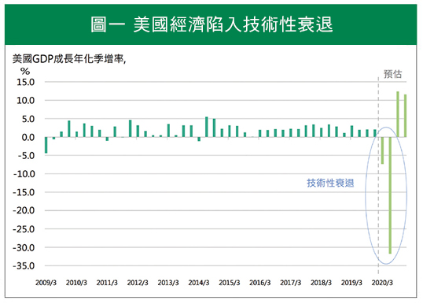
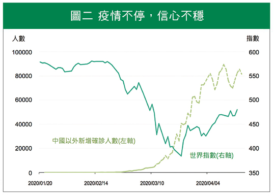
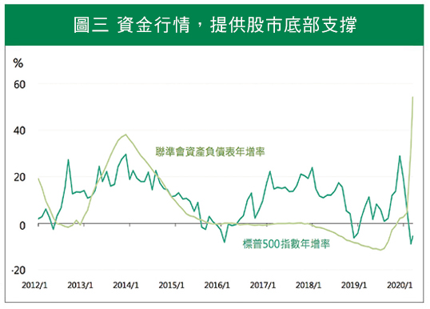

COVID-19
是疫情？行情？
投資機會已經浮出，疫情後續發展為關鍵
雖然還在上半年，但新冠肺炎(COVID-19)幾乎可以確定是2020年最大的黑天鵝。今年第一季，全球股市最大跌幅逾3成，確認跌入熊市之後，又在3月底V轉超過2成進入牛市。然而，歷史上的熊市也都曾發生過短暫反彈達牛市標準的情況，到底接下來是熊還是牛？COVID-19帶來的是讓金融崩潰的災難 性疫情？又或是另一波行情的開始？
人口管制延續，全球消費進入冷凍期
新冠肺炎疫情擴及各大洲，全球超過三分之一的人口進入政府管制狀態。店家強制關閉，人民無法自由外出，除了必要的民生必需品，民間消費冷到近乎凍結。餐廳、球場、電影院、百貨公司都成禁地，牽連的產業已不侷限於航空業跟旅遊業。
官方確診人數最高的美國，更成為經濟的重災區。美國今年上半年經濟衰退幾乎已成定局，目前看來，Q2衰退幅度甚至是50年來最大(見圖一)。美國政府為了應對這個幾乎讓人猝不及防的經濟衝擊，祭出極度寬鬆的貨幣政策與財政政策，減緩經濟因短期過度激烈反應而出現致命性的打擊，如企業大規模倒閉。
雖然4月份美國有大量的新增失業人口，但只要企業沒有大規模倒閉，就還能算是短期失業，造成的衝擊較小。然而，這場經濟危機是否能安然落幕，仍得回歸一個問題：疫情是否能迅速結束？。

資料來源：2020年美國GDP預估取BoA、Goldman Sachs、JPMorgan、Morgan Stanley四家平均。
疫情何時退散、何時該進場？觀察這兩點就對了
疫情尚未結束，專家警示各國都必須嚴防二次爆發，全球股市也不排除還有向下修正的風險。然而，疫情終有消退的時候，投資人未來應該關注哪些因素，好做為進場的指標呢？
首先，歐洲與美國疫情開始脫離高峰期的轉折時間點。隨著武漢封城11週後終於解封，市場普遍認為，中國因為提前封城等措施，而使疫情趨緩。歐美各國封城速度雖慢，但也已經執行不少措施，不排除未來1個月全球疫情進入高峰期之後，於Q2可能到疫情的轉折點。(見圖二)
其次，油價。油價向來為經濟的信心指標，低油價雖有利消費者，但油價過低，反應的是需求大幅縮減，會讓投資人擔憂全球經濟將大幅衰退，5月西德州原油期貨更是來到每桶-37.6美元，為史上首見，加深市場的恐慌。目前，美國、OPEC及俄羅斯已經開始協商共同減產，避免油價過低。一旦開始執行減產，加上各國逐步復工，供需改善後使油價逐步回升，也將帶動後續市場信心上揚。

資料來源：WHO，Bloomberg。
恐慌，是新冠肺炎疫情給投資人最大的感受。然而，聰明的投資人千萬別忘了那句投資金律，「行情總是在絕望中誕生」。因為寬鬆政策，聯準會的資產負債表在短短1-2個月內擴增了50%，將提供未來股市最大的反彈動力(見圖三)。
因此，投資人目前反而應該重新檢視自己的觀察名單，是否有因疫情讓股價大幅修正，使長線投資價值逐步浮現？不妨趁此時分批增持全球股，或者這次跌深的美股。同時，這次疫情也帶來了新的科技需求，例如視訊軟體、雲端資料、線上購物、送餐服務等，這些科技股反而可能才剛開始走向長期成長的開始，千萬別放棄這樣的好機會。

資料來源：Bloomberg。
【揭露事項與免責聲明】
本報告為國泰世華銀行（下稱“本公司”）提供尊貴理財客戶之參考資料，並非針對特定客戶所作的投資建議，且在本報告撰寫過程中，並未考量讀者個別的財務狀況與需求，故本報告所提供的資訊無法適用於所有讀者。
本報告係根據本公司所取得的資訊加以彙集及研究分析，本公司並不保證各項資訊之完整性及正確性。本報告中所提出之意見係為本報告出版當時的意見，邇後相關資訊或意見若有變更，本公司將不會另行通知。本公司亦無義務持續更新本報告之內容或追蹤研究本報告所涵蓋之主題。本報告中提及的標的價格、價值及收益隨時可能因各種本公司無法控制之政治、經濟、市場等因素而產生變化。本報告中之各項預測，均係基於對目前所得資訊作合理假設下所完成，所以並不必然實現。本報告不得視為買賣有價證券或其他金融商品的要約或要約之引誘。
國泰金融集團（下稱“本集團”）所屬各公司可能個別基於特定目的且針對特定人士出具研究報告、提供口頭或書面的市場看法或投資建議（下稱“提供資訊”），鑑於提供資訊之單位、時間、對象及目的不同，本報告與本集團其他單位所提供資訊可能有不一致或相牴觸之情事；本集團所屬公司從事各項金融業務，包括但不限於銀行、保險、證券經紀、承銷、自有資金投資、資產管理、證券投資信託等。本集團各公司對於本報告所涵蓋之標的可能有投資或其他業務往來關係，各公司從事交易之方向亦可能與本報告不一致，讀者應審慎評估自身投資風險，自行決定投資方針，不應以前述不一致或相抵觸為由，主張本公司或本集團其他成員有侵害讀者權益之情事。